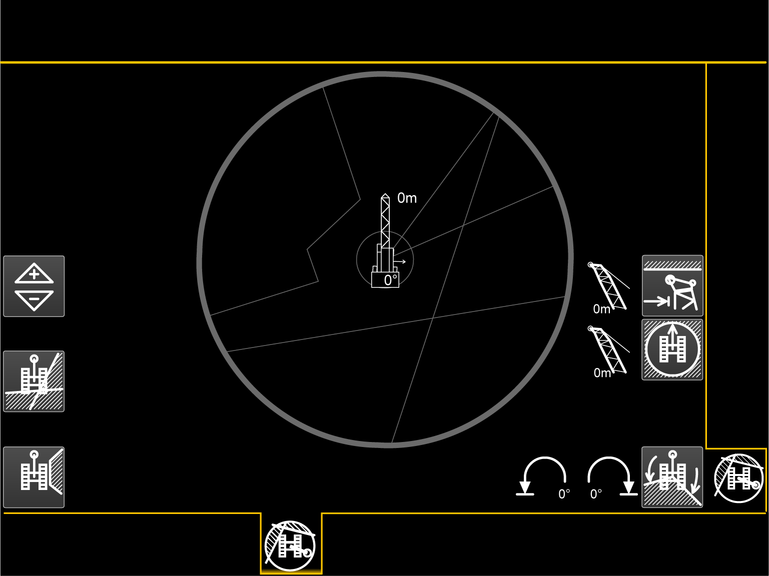
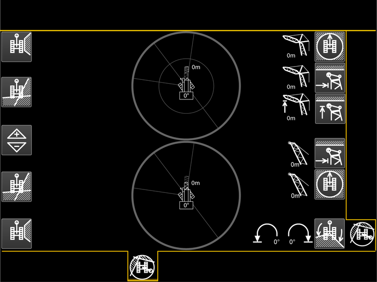
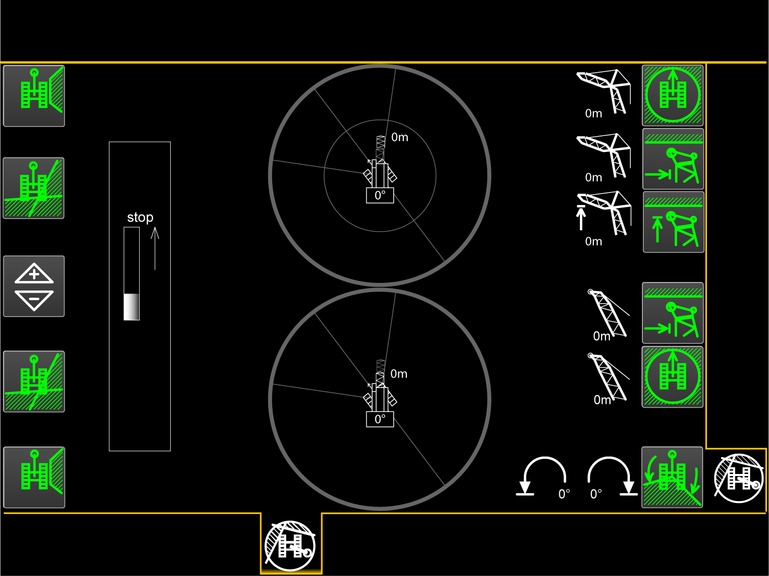
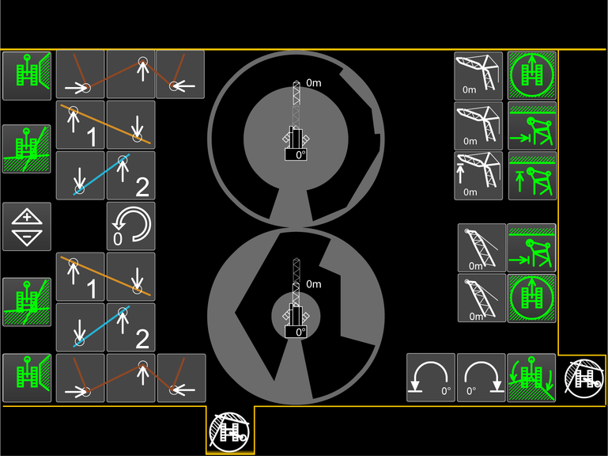

Bildschirmseite Arbeitsbereichsbegrenzung
Taste Bildschirmseite Arbeitsbereichsbegrenzung
Auf Bildschirmseite Arbeitsbereichsbegrenzung umschalten.
Ein weißer Pfeil am Raupenträger zeigt die Fahrtrichtung an.

Fig. 2237: Bildschirmseite Arbeitsbereichsbegrenzung - Begrenzungen ausgeschaltet
Fig. 2237: Bildschirmseite Arbeitsbereichsbegrenzung - Begrenzungen ausgeschaltet

Fig. 2238: Bildschirmseite Arbeitsbereichsbegrenzung - Begrenzungen mit verstellbarem Nadelausleger ausgeschaltet
Fig. 2238: Bildschirmseite Arbeitsbereichsbegrenzung - Begrenzungen mit verstellbarem Nadelausleger ausgeschaltet

Fig. 2239: Bildschirmseite Arbeitsbereichsbegrenzung - Begrenzungen mit verstellbarem Nadelausleger eingeschaltet
Fig. 2239: Bildschirmseite Arbeitsbereichsbegrenzung - Begrenzungen mit verstellbarem Nadelausleger eingeschaltet

Fig. 2240: Bildschirmseite Arbeitsbereichsbegrenzung - Stopp-Positionen mit verstellbarem Nadelausleger einstellen
Fig. 2240: Bildschirmseite Arbeitsbereichsbegrenzung - Stopp-Positionen mit verstellbarem Nadelausleger einstellen
Taste Sektorbegrenzung
Sektorbegrenzung ist ausgeschaltet.
Zuletzt eingestellte Sektorbegrenzung einschalten.
Taste Sektorbegrenzung (leuchtet grün)
Sektorbegrenzung ist eingeschaltet.
Sektorbegrenzung ausschalten.
Taste Stopp-Position 1 der Sektorbegrenzung
Stopp-Position 1 der Sektorbegrenzung einstellen.
Taste Stopp-Position 2 der Sektorbegrenzung
Stopp-Position 2 der Sektorbegrenzung einstellen.
Taste Stopp-Position 3 der Sektorbegrenzung
Stopp-Position 3 der Sektorbegrenzung einstellen.
Taste Kantenbegrenzung
Kantenbegrenzung ist ausgeschaltet.
Zuletzt eingestellte Kantenbegrenzung einschalten.
Taste Kantenbegrenzung (leuchtet grün)
Kantenbegrenzung ist eingeschaltet.
Kantenbegrenzung ausschalten.
Taste Stopp-Position 1 der ersten Kante
Stopp-Position 1 der ersten Kante einstellen.
Taste Stopp-Position 2 der ersten Kante
Stopp-Position 2 der ersten Kante einstellen.
Taste Stopp-Position 1 der zweiten Kante
Stopp-Position 1 der zweiten Kante einstellen.
Taste Stopp-Position 2 der zweiten Kante
Stopp-Position 2 der zweiten Kante einstellen.
Taste Arbeitsbereichsbegrenzungen
Tasten der Stopp-Positionen sind am Bildschirm ausgeblendet.
Tasten der Stopp-Positionen am Bildschirm einblenden.
Taste Arbeitsbereichsbegrenzungen (leuchtet grün)
Tasten der Stopp-Positionen sind am Bildschirm eingeblendet.
Tasten der Stopp-Positionen am Bildschirm ausblenden.
Taste Arbeitsbereichsbegrenzungen (leuchtet rot)
Maschine wurde verfahren.
Arbeitsbereichsbegrenzung muss neu eingestellt werden.
Taste Arbeitsbereichsbegrenzungen zurücksetzen
Arbeitsbereichsbegrenzungen zurücksetzen.
Taste Stopp-Position des Nadelauslegers
Stopp-Position des Nadelauslegers einstellen.
Wert zeigt zuletzt eingestellte Stopp-Position des Nadelauslegers.
Taste Maximale Ausladungsbegrenzung
Maximale Ausladungsbegrenzung ist ausgeschaltet.
Zuletzt eingestellte maximale Ausladungsbegrenzung einschalten.
Taste Maximale Ausladungsbegrenzung (leuchtet grün)
Maximale Ausladungsbegrenzung ist eingeschaltet.
Maximale Ausladungsbegrenzung ausschalten.
Taste Minimale Ausladungsbegrenzung
Minimale Ausladungsbegrenzung ist ausgeschaltet.
Zuletzt eingestellte minimale Ausladungsbegrenzung einschalten.
Taste Minimale Ausladungsbegrenzung (leuchtet grün)
Minimale Ausladungsbegrenzung ist eingeschaltet.
Minimale Ausladungsbegrenzung ausschalten.
Taste Stopp-Position des Nadelausleger-Kopfs
Stopp-Position des Nadelausleger-Kopfs einstellen.
Wert zeigt zuletzt eingestellte Stopp-Position des Nadelausleger-Kopfs.
Taste Maximale Kopfhöhenbegrenzung
Maximale Kopfhöhenbegrenzung ist ausgeschaltet.
Zuletzt eingestellte maximale Kopfhöhenbegrenzung einschalten.
Taste Maximale Kopfhöhenbegrenzung (leuchtet grün)
Maximale Kopfhöhenbegrenzung ist eingeschaltet.
Maximale Kopfhöhenbegrenzung ausschalten.
Taste Stopp-Position des Hauptauslegers
Stopp-Position des Hauptauslegers einstellen.
Wert zeigt zuletzt eingestellte Stopp-Position des Hauptauslegers.
Taste Linke Stopp-Position der Drehbereichsbegrenzung
Linke Stopp-Position der Drehbereichsbegrenzung einstellen.
Wert zeigt zuletzt eingestellte linke Stopp-Position der Drehbereichsbegrenzung.
Taste Rechte Stopp-Position der Drehbereichsbegrenzung
Rechte Stopp-Position der Drehbereichsbegrenzung einstellen.
Wert zeigt zuletzt eingestellte rechte Stopp-Position der Drehbereichsbegrenzung.
Taste Drehbereichsbegrenzung
Drehbereichsbegrenzung ist ausgeschaltet.
Zuletzt eingestellte Drehbereichsbegrenzung einschalten.
Taste Drehbereichsbegrenzung (leuchtet grün)
Drehbereichsbegrenzung ist eingeschaltet.
Drehbereichsbegrenzung ausschalten.
Anzeige Stopp der Arbeitsbereichsbegrenzung
Stopp-Position der Arbeitsbereichsbegrenzung ist über 5 m (16.4 ft) entfernt.
Anzeige Stopp der Arbeitsbereichsbegrenzung (leuchtet gelb)
Stopp-Position der Arbeitsbereichsbegrenzung ist unter 5 m (16.4 ft) entfernt.
Anzeige Stopp der Arbeitsbereichsbegrenzung (leuchtet rot)
Stopp-Position der Arbeitsbereichsbegrenzung ist erreicht.
Erreichte Stopp-Positionen werden eingeblendet.
Anzeige Maximale Ausladungsbegrenzung
Stopp-Position der maximalen Ausladungsbegrenzung ist erreicht.
Hauptausleger senken ist gesperrt.
Nadelausleger senken ist gesperrt.
Anzeige Minimale Ausladungsbegrenzung
Stopp-Position der minimalen Ausladungsbegrenzung ist erreicht.
Hauptausleger heben ist gesperrt.
Nadelausleger heben ist gesperrt.
Anzeige Maximale Kopfhöhenbegrenzung
Stopp-Position der maximalen Kopfhöhenbegrenzung ist erreicht.
Hauptausleger heben ist gesperrt.
Nadelausleger heben ist gesperrt.
Anzeige Linke Stopp-Position der Drehbereichsbegrenzung
Linke Stopp-Position der Drehbereichsbegrenzung ist erreicht.
Oberwagen nach links drehen ist gesperrt.
Anzeige Rechte Stopp-Position der Drehbereichsbegrenzung
Rechte Stopp-Position der Drehbereichsbegrenzung ist erreicht.
Oberwagen nach rechts drehen ist gesperrt.